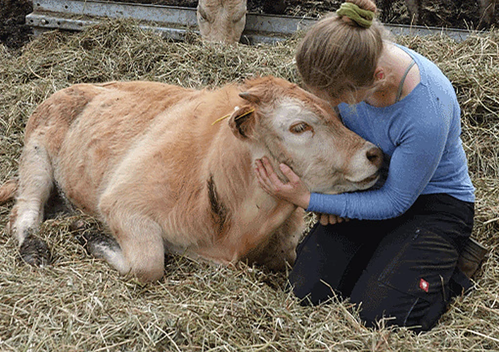
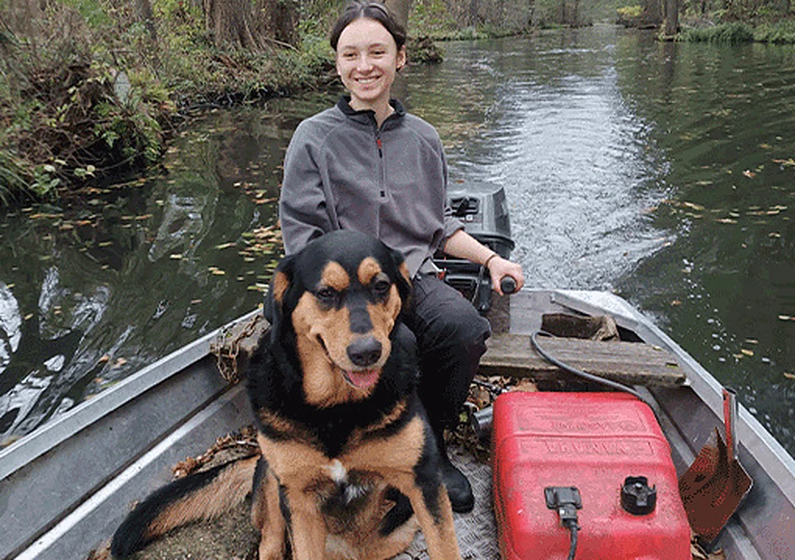
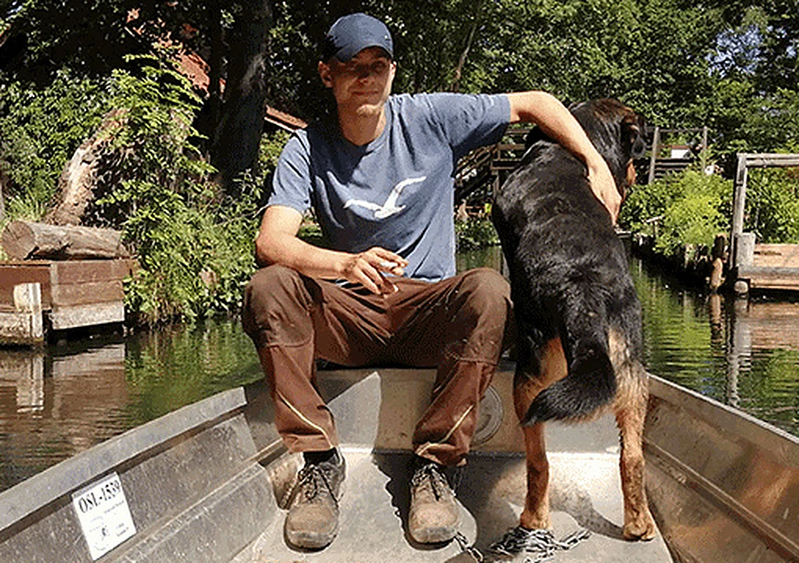

Mitarbeiten auf dem Hof
Freiwilliges ökologisches Jahr
Du bist auf der Suche nach abwechslungsreicher, tier- und naturverbundener Arbeit? Du möchtest Dich ausprobieren, neues Lernen und weg von der Schulbank? Dann bewirb Dich bei uns für ein freiwilliges ökologisches Jahr!

Du solltest keine Angst vor großen Tieren oder schlechtem Wetter haben, gerne im Team arbeiten, mit anpacken und dich auch selbständig miteinbringen können.
Du bekommst eine Unterkunft gestellt, sowie ein gutes Mittagessen und erhältst über die IJGD (Träger des FÖJs) eine monatliche Entlohnung.
Wir freuen uns auf Dich!

Stimmen
Das sagen unsere Freiwilligen

Ein vielfältiges Arbeitsfeld im Spreewald, mit Möglichkeit zum selbständigen Arbeiten erlernen von handwerklichen Tätigkeiten, Tierpflege und pure Erfahrung in der Natur.JuliusFÖJ 2020/2021
Es war eine super Entscheidung, nach dem Abitur ein FÖJ zu machen und ich würde mich immer wieder dafür entscheiden. Auf dem Mutschenhof habe ich mich sofort Willkommen gefühlt, sowohl von den Menschen als auch von den Tieren ; ) Der respektvolle Umgang mit allen Lebewesen, die wunderschöne Natur und das befriedigende Gefühl nach getaner Arbeit ins Bett zu fallen wird mir in Erinnerung bleiben.LeaFÖJ 2021/2022
Das Jahr auf dem Mutschenhof kann ich jedem empfehlen, der eine kleine Auszeit braucht und offen für das ein oder andere Abenteuer ist. Auch als gebürtige Spreewälderin konnte ich hier neue Ecken meiner Heimat kennenlernen und bin der Tradition noch etwas näher gekommen. Ich bin sehr dankbar für alles was ich lernen konnte und für alle die ich kennenlernen durfte, ob Mensch oder Tier.FionaFÖJ 2022/2023